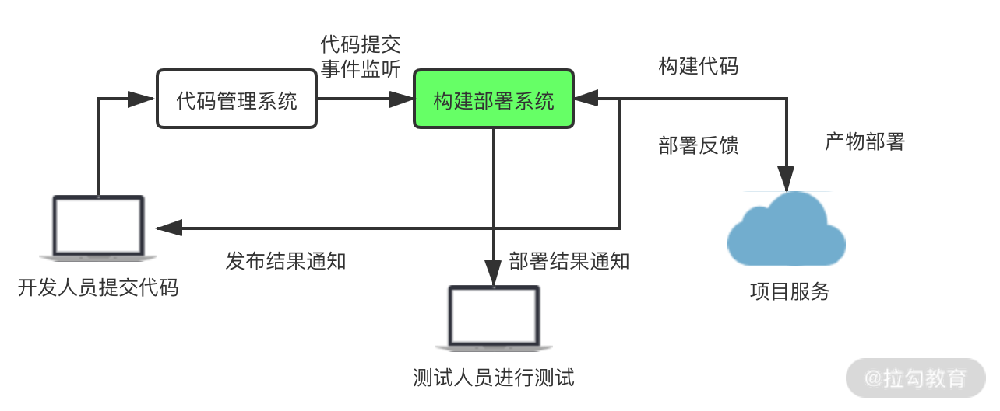

- 00 开篇词 建立上帝视角，全面系统掌握前端效率工程化.md.html
- 01 项目基石：前端脚手架工具探秘.md.html
- 02 界面调试：热更新技术如何开着飞机修引擎？.md.html
- 03 构建提速：如何正确使用 SourceMap？.md.html
- 04 接口调试：Mock 工具如何快速进行接口调试？.md.html
- 05 编码效率：如何提高编写代码的效率？.md.html
- 06 团队工具：如何利用云开发提升团队开发效率？.md.html
- 07 低代码工具：如何用更少的代码实现更灵活的需求.md.html
- 08 无代码工具：如何做到不写代码就能高效交付？.md.html
- 09 构建总览：前端构建工具的演进.md.html
- 10 流程分解：Webpack 的完整构建流程.md.html
- 11 编译提效：如何为 Webpack 编译阶段提速？.md.html
- 12 打包提效：如何为 Webpack 打包阶段提速？.md.html
- 13 缓存优化：那些基于缓存的优化方案.md.html
- 14 增量构建：Webpack 中的增量构建.md.html
- 15 版本特性：Webpack 5 中的优化细节.md.html
- 16 无包构建：盘点那些 No-bundle 的构建方案.md.html
- 17 部署初探：为什么一般不在开发环境下部署代码？.md.html
- 18 工具盘点：掌握那些流行的代码部署工具.md.html
- 19 安装提效：部署流程中的依赖安装效率优化.md.html
- 20 流程优化：部署流程中的构建流程策略优化.md.html
- 21 容器方案：从构建到部署，容器化方案的优势有哪些？.md.html
- 22 案例分析：搭建基本的前端高效部署系统.md.html
- 23 结束语 前端效率工程化的未来展望.md.html
22 案例分析：搭建基本的前端高效部署系统
上节课的思考题是容器化部署与容器化运行服务的差异点有哪些。这里我总结三个有代表性的供你参考：
- 容器持续时间不同：容器化部署的容器只在部署时创建使用，部署完成后即删除；而容器化服务则通常长时间运行。
- 容器互联：容器化部署中的容器通常无须访问其他容器；而容器化服务则涉及多容器互联，以及更多弹性伸缩的容器特性。
- 容器资源：容器化部署中涉及构建等 CPU 和 I/O 密集型处理；而容器化服务则对网络负载更敏感。
在今天的课程里，我将带你分析一个基本的前端部署系统的工作流程、基本架构和主要功能模块的技术点。学习了这部分的内容之后，再结合之前几节课关于部署效率的内容，我们就可以基本掌握一个高效的前端构建部署系统的开发思路了。
流程梳理
要搭建一个自动化的构建部署系统，首先需要理解使用这个部署系统的工作流程。
构建部署工作流程
在下图中，我演示了从用户提交代码到项目部署上线的整个过程中，部署系统与其他节点对接的流程示意图。

其中的主要环节如下：
- Webhook：Webhook 是一种不同服务之间，通过订阅或推送模式来传递信息的消息通知机制。部署系统将一个 Webhook 接口注册到代码管理系统（CVS）中。开发人员提交代码后，触发 CVS 的 Webhook，由 CVS 将提交事件通知给部署系统。
- 项目构建：部署系统在获取提交代码的消息后会创建构建任务，并推入待执行队列中，系统将依次执行任务队列中的构建任务。构建任务在执行时依次执行代码获取、依赖安装、代码构建和产物打包等环节。
- 产物部署：构建完成后的发布代码一般分为两种模式：Push 模式和 Pull 模式。在 Push 模式下，由部署系统通过 SCP 等方式将产物包推送到目标服务器，并执行解压重启等发布流程。在 Pull 模式下会提供下载接口，由下游发布环节调用，然后获取产物包以便执行后续发布流程。同时，下游环节会调用反馈接口，将发布结果反馈至部署系统。
- 结果反馈：构建结果与部署结果会通过通知模块（消息、邮件等）的方式，反馈至开发与测试人员。
系统使用辅助流程
除了核心的构建部署流程外，系统还需要具备可供用户正常使用的其他辅助功能流程：
- 登录与用户管理：系统需要获取使用者的基本信息，并对其在系统内的使用权限进行管理。
- 项目流程：系统需要具备完整的项目接入流程，包括在系统内新增项目、修改项目部署配置、获取项目列表与查看项目详情等。
- 构建流程：系统界面中需要呈现项目的构建记录列表、构建详情等信息，并能通过界面操控构建任务的状态变更（新建、开始、取消、删除等）。
- 发布流程：系统界面中需要呈现项目的发布记录列表，并能通过界面操控构建记录的发布等。
以上就是一个基本的前端部署系统的工作流程。限于篇幅原因，课程里不再展开其中各个功能模块的具体细节，而主要介绍最核心的构建任务流程的相关技术点。
构建流程技术模块分析
这部分主要介绍部署服务器环境准备、Webhook、任务队列等 6 个技术点，首先是部署服务器环境准备。
部署服务器环境准备
与普通的 Web 服务不同，用于项目构建部署的服务器需要具备构建部署流程所需的相关环境条件。在非容器化的情况下，如果所搭建的是分布式的服务，则需要尽量保证一些环境条件的一致，以便在不同项目使用和迁移时，保持过程和产物的稳定性。
需要保持一致的环境条件如下：
- NodeJS：NodeJS 的版本会直接对项目的依赖和构建产生影响，需要尽可能地保证各部署服务节点与线上运行服务环境的 NodeJS 版本一致。
- 全局依赖工具：它是项目中可能需要的 Yarn、pnpm 等全局安装的工具。你需要保证预先在服务器中安装了它们，并确认版本的一致性。
- 各类配置文件与环境变量：这指的是 npm 和 Yarn 的配置文件、系统的配置文件 .bash_profile 等。你需要保证在部署服务器中提前配置相关预设。
- 系统所需其他工具：这指的是项目部署中所需的其他工具，例如 Git、Pigz、Zstd 等。你需要保证它们已在部署服务中提前安装完成。
- 服务目录划分与维护：除了部署服务自身的目录外，在服务器中还需要规划项目构建的工作目录、项目产物目录、依赖缓存目录、持久化缓存目录等。各目录还需要有各自的监控与清理策略。
Webhook
要实现用户提交代码后部署系统立即收到相关消息的功能，就需要事先在 CVS 系统（例如 Gitlab、Github 等）中创建 Webhook。具体流程如下：
- 在 CVS 系统中创建 Web 应用，用于用户在部署系统中调取 Oauth 授权并获得用户的授权信息，以便在后续流程中调用各类 API。
- 在部署系统中新增接收 Webhook 消息的路由，用于后续接收来自 CVS 的提交信息后，在部署系统中创建构建，并进行后续工作。
- 用户在部署系统中新增项目时，会调用创建 Webhook 的接口，将上述路由地址写入 CVS 系统的 Webhook 列表中。同时可以根据需求设置特定的 Webhook 参数，例如只监听特定的分支或只监听 Tag Push 等。
任务队列
在部署系统接收到 Webhook 传递的代码提交信息后，下一步就是根据提交信息创建构建记录，并执行构建任务。但是由于执行构建任务是耗时的，对于同一个项目而言，如果当前有正在执行的构建任务时，执行任务的工作目录是处于使用状态的，此时需要把这期间新创建的构建任务排入待执行队列中，等待当前任务执行完毕后，再从队列中获取下一个任务执行。即使使用容器化构建部署，构建任务在独立容器内进行，也需要对整个部署系统的**同时执行任务数（Concurrency）**设定限制。我们需要将超过限制数量的新增任务排入队列中，避免过多任务同时执行，耗尽集群计算资源。
在 NodeJS 中，有一些管理队列的工具可供选用，例如 Bull、Agenda 等。以 Bull 为例，下面的示例代码就演示了部署系统中创建队列、添加构建任务、任务处理、任务完成的流转过程。
// 创建任务队列
queue = new Queue(qname, {
redis: redisConfig,
})
queue.promiseDone = () => {}
queue.process(async (job, done) => {
const config = job.data
const task = new BuildTask(config) //创建并执行构建任务
queue.promiseDone = done //将任务完成函数赋值给外部属性，用于异步完成
})
return queue
}
export const queueJobComplete = async (id) => {
queue.promiseDone()
}
export const queueJobFail = async (id, err) => {
queue.promiseDone(new Error(err))
}
export const queueJobAdd= async (id, data) => {
queue.add(data, {
jobId: id, //jobId of queue
})
}
构建任务阶段与插件系统
在之前的课程介绍过，部署系统中一次完整的构建任务大致可分为以下基本阶段：
- 初始化阶段：系统新建构建任务，初始化各配置参数与任务状态数据。
- 获取代码阶段：根据任务配置，在任务工作目录中获取待构建的项目代码。
- 依赖安装阶段：在执行构建编译前进行依赖安装。依赖安装的脚本可以写在项目配置中，也可以由系统自主分析获取。
- 构建执行阶段：执行构建过程，输出产物代码。构建过程的执行脚本需要写在项目配置中。
- 产物打包阶段：将构建产物打包压缩，并存储到持久化备份目录中。
这些阶段的划分可以起到以下作用：
- 明确构建执行进展，当构建中断时便于定位到具体的执行阶段。
- 各阶段独立统计耗时，便于针对性优化。
- 可参照构建效率模块中介绍过的 Webpack 插件系统，使用 Tapable 定义各阶段的 Hooks，从而将复杂的构建任务执行过程拆分到各功能插件中。这些插件可以是系统性的，例如在依赖安装阶段可以应用依赖安装目录缓存插件，在构建执行阶段前后可以应用构建持久化缓存插件。这些插件也可以是业务功能性的，例如分支合并检查插件、代码规范检查插件等。
任务命令与子进程
和普通的 Web 服务不同，部署服务在对项目进行构建部署时，涉及许多命令行指令的调用。如下所示：
#依赖安装
npm install
#执行构建
npm run build
#产物打包
tar -zcf client.tar.gz dist/
在 NodeJS 程序中，这些调用需要通过子进程来完成，例如下面的代码：
import { spawn } from 'child_process'
export const spawnPromise = ({ commands, cwd, onStdout, onStderr }) => {
return new Promise((resolve, reject) => {
onStdout = onStdout || (() => {})
onStderr = onStderr || (() => {})
const subProcess = spawn('bash', { detached: true, cwd })
subProcess.on('close', (code, signal) => {
if (signal === 'SIGHUP') {
//abort callback immediately after kill
return reject()
}
if (code === 0) {
resolve('ok')
} else {
reject()
}
})
subProcess.stdout.setEncoding('utf8')
subProcess.stderr.setEncoding('utf8')
subProcess.stdout.on('data', onStdout)
subProcess.stderr.on('data', onStderr)
subProcess.stdin.on('error', (e) => {
notifySysError('subprocess stdin error', e)
reject(e)
})
commands.forEach((command) => {
subProcess.stdin.write(command + '\n')
})
subProcess.stdin.end()
})
}
我创建了一个 bash 的子进程，输入执行指令，然后监听输出信息和结束状态。通过这样的方式，即可控制各构件阶段指令的执行。
状态、事件与 Socket
除了把构建过程划分成各执行阶段外，还需要定义一次构建任务的所有可能状态：
- 初始化：该状态表示已部署服务接收到了来自 Webhook 的提交信息，并提取了构建所需的所有配置数据，同时也已创建了对应的构建记录。
- 队列中：该状态表示该构建任务已列入等待队列中。
- 进行中：该状态表示任务已开始执行。
- 已取消：该状态表示任务已被用户主动取消执行。
- 已成功：该状态表示构建任务已完成，用户可以进行下一步的发布流程。
- 已失败：该状态表示构建任务已失败，需要用户确认失败原因并调试修复。
- 已超时：该状态表示构建任务已超时。在实际使用过程中，如果发现一些异常情况，不会终止构建进程，因此需要设置超时时间来发现和反馈这些异常情况。
这 7 种状态中的后 4 种为终止状态。在部署系统中，需要将这些状态及时反馈到用户界面。
整个传递机制可以分为下面三个部分：
- 在构建任务中，当达到特定终止状态时，由服务进程触发相应事件。
- 在构建事件处理器中，根据监听到的不同事件执行相应的处理，例如对于构建成功的事件而言，我们需要变更数据库中的构建记录状态、执行自动发布的相关逻辑，以及将成功的状态通知到 Socket 处理器。
- 在 Socket 处理器中，服务器端触发相应的 Socket 消息，然后网页端在接收到 Socket 消息后，会变更页面中的构建记录显示状态。
总结
构建部署系统相对于我们日常比较熟悉的 B 端系统或 C 端 WebApp 而言，有一定的复杂性。但是只要理解了工作原理且掌握了整体架构，就可以按部就班地开发其中的各个模块，最后串接成一个功能完善、流程自洽的系统服务。所以本节课我们聊了两方面的内容：流程梳理和核心技术模块分析。
在流程梳理方面，首先你需要对构建部署的整体工作流程有一个比较清晰的认知，包括各服务间的对接、信息的传递等，其次掌握服务内部用户界面的各模块操作流程。在核心构建流程的模块分析方面，你需要了解操作层面的服务器环境的准备工作，代码架构层面的任务队列、构建任务阶段与状态拆分等。
希望通过这些内容，能让你对如何搭建高效的前端部署系统有一个初步印象。
到这里，我们的专栏就接近尾声了。下周还会更新一篇结束语，我会聊聊对开设课程的一些想法，包括对前端工程化领域的一些理解，以及对未来技术的展望。欢迎来听！
最后，我邀请你参与对本专栏的评价，你的每一个观点对我们来说都是最重要的。点击链接，即可参与评价，还有机会获得惊喜奖品！